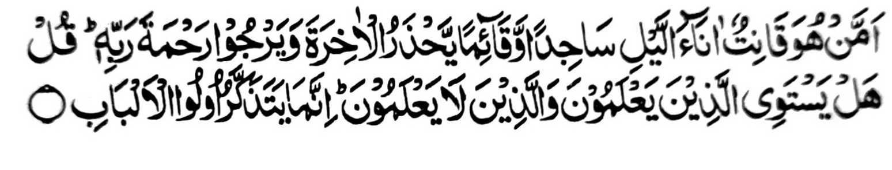

"Ino so tao a sekaniyan na pephangongo-notan ko manga oras ko kagagawi-i a somosodod go gomaganat a ika-alek iyan so (siksa ko) Akhirat, go a-arapen niyan so Limo o Kadnan niyan; (ba lagid o tao a di phangongonotan?) Tharo-a ngka: A ba magizan so manga tata-o a go so di manga tata-o? Aya bo a phakatanodon na so aden a manga sabot iyan." [Soorah:Az-Zumar:9]